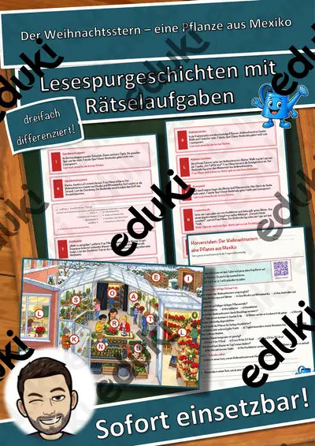
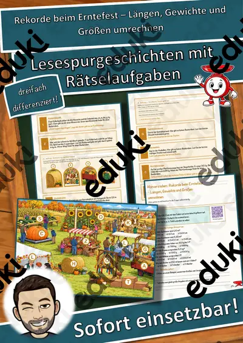
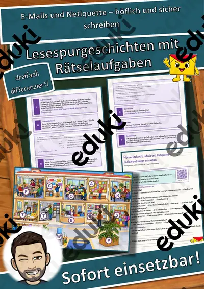
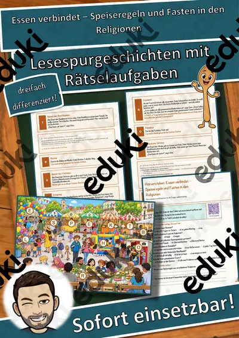

Materialpaket Advent für die 5. Klasse: 3 Lesespurgeschichten mit Rätselaufgaben (Weihnachtsstern, Plätzchen backen, Handnähen)

Der Hund – unser treues Haustier – Lesespurgeschichte mit Rätselaufgaben (Klasse 5)

Der Tag der Muttersprache – viele Sprachen in meiner Klasse – Lesespurgeschichte mit Rätselaufgaben (Klasse 5)

Der Nistkasten – ein Zuhause für Meisen bauen – Lesespurgeschichte mit Rätselaufgaben (Klasse 5)

Das Frühlingsfest – Neujahr in China – Lesespurgeschichte mit Rätselaufgaben (Klasse 5)

Sicher schneiden – Krallengriff, Brückengriff und eine Gemüsesuppe – Lesespurgeschichte mit Rätselaufgaben (Klasse 5)

Der Weihnachtsstern – eine Pflanze aus Mexiko – Lesespurgeschichte mit Rätselaufgaben (Klasse 5)

Die Holzbläser – Flöte, Klarinette, Oboe und Fagott – Lesespurgeschichte mit Rätselaufgaben (Klasse 5)

Kaninchen und Meerschweinchen artgerecht halten – Lesespurgeschichte mit Rätselaufgaben (Klasse 5)

Glocken – vom Guss bis zum Geläut – Lesespurgeschichte mit Rätselaufgaben (Klasse 5)

Weihnachtsplätzchen backen – Teig, Maße und Hygiene – Lesespurgeschichte mit Rätselaufgaben (Klasse 5)

Handnähen – Säckchen für den Adventskalender – Lesespurgeschichte mit Rätselaufgaben (Klasse 5)

Wassily Kandinsky – wenn Farben klingen – Lesespurgeschichte mit Rätselaufgaben (Klasse 5)

Rekorde beim Erntefest – Längen, Gewichte und Größen umrechnen – Lesespurgeschichte mit Rätselaufgaben (Klasse 5)

Vom Feld in den Laden – der Weg des Apfels – Lesespurgeschichte mit Rätselaufgaben (Klasse 5)

Die Tastatur – Zehnfingersystem und Tastenkürzel – Lesespurgeschichte mit Rätselaufgaben (Klasse 5)

E-Mails und Netiquette – höflich und sicher schreiben – Lesespurgeschichte mit Rätselaufgaben (Klasse 5)

Suchmaschinen – richtig suchen und finden – Lesespurgeschichte mit Rätselaufgaben (Klasse 5)

Dateien und Ordner – Ordnung auf dem Computer – Lesespurgeschichte mit Rätselaufgaben (Klasse 5)

Programmieren mit Blöcken – meine erste Animation – Lesespurgeschichte mit Rätselaufgaben (Klasse 5)

Algorithmen im Alltag – Schritt für Schritt zum Ziel – Lesespurgeschichte mit Rätselaufgaben (Klasse 5)

Tanzen in der Schule – Rhythmus und Bewegung – Lesespurgeschichte mit Rätselaufgaben (Klasse 5)

Inline-Skaten – sicher rollen, bremsen, fallen – Lesespurgeschichte mit Rätselaufgaben (Klasse 5)

Rückschlagspiele – Federball, Tischtennis und Tennis – Lesespurgeschichte mit Rätselaufgaben (Klasse 5)

Gefäße aus Ton – Aufbaukeramik – Lesespurgeschichte mit Rätselaufgaben (Klasse 5)

Collage und Materialbild – Kunst aus Papier, Stoff und Knöpfen – Lesespurgeschichte mit Rätselaufgaben (Klasse 5)

Masken gestalten – Gesichter verwandeln – Lesespurgeschichte mit Rätselaufgaben (Klasse 5)

Höhlenmalerei – die ersten Künstler – Lesespurgeschichte mit Rätselaufgaben (Klasse 5)

Essen verbindet – Speiseregeln und Fasten in den Religionen – Lesespurgeschichte mit Rätselaufgaben (Klasse 5)

Jeder sieht die Welt anders – Wahrnehmung und Blickwinkel – Lesespurgeschichte mit Rätselaufgaben (Klasse 5)
Keine Materialien gefunden – versuch einen anderen Suchbegriff oder Filter.
Ankommen in der weiterführenden Schule
Der Wechsel in Klasse 5 bringt neue Fächer, neue Lehrkräfte und neue Anforderungen. Die Materialien dieser Seite helfen, Fachtexte lesen zu lernen: kurze Sachtexte, klare Aufgaben, Wortspeicher als Hilfe.
Biologie und Deutsch als Schwerpunkt
Der größte Teil der Seite gehört zu zwei Fächern. In Biologie stehen etwa „Der Hund“, „Der Weihnachtsstern“ und „Kaninchen und Meerschweinchen artgerecht halten“, in Deutsch „Der Nistkasten“, „Vom Feld in den Laden“, „Essen verbindet“ und „Feste der Weltreligionen“. Alle sind Lückentexte mit Wortspeicher, Hörfassung und Suchsel.
Naturwissenschaften und Welt
„Der Nationalpark“, „Das Planetarium“, „Der Boden“ und „Das Bergwerk“ stehen für Erdkunde, „Das Wasserlabor“ und „Das Luftlabor“ für Chemie. Physik ergänzt „Die Klangwerkstatt“ und „Das Spiegelkabinett“. Das „Materialpaket Advent für die 5. Klasse“ bündelt drei Lesespurgeschichten mit Rätseln.
Gestalten, Bewegen, Sprachen
Kunst bietet „Handnähen“, „Gefäße aus Ton“ und „Collage und Materialbild“. Sport: „Tanzen in der Schule“, „Inline-Skaten“ und „Rückschlagspiele“. Für Spanisch gibt es Fichas von Kandinsky bis Dalí. Der Sachunterricht bringt für kleine Gruppen „Der Zirkus“ und „Der Zoo“.
Fachtexte lesen lernen
Der Gewinn dieser Materialien liegt weniger im Stoff als in der Technik: Kinder lernen, einen Sachtext zu erfassen, Schlüsselwörter zu finden und Lücken sinnvoll zu füllen. Der Wortspeicher nimmt Druck heraus, die Hörfassung hilft Kindern mit Leseschwäche, und die Lösung ermöglicht Selbstkontrolle. Dieselbe Methode wiederholt sich in vielen Fächern, deshalb übertragen die Kinder sie schnell auf neue Themen. Die Suche findet auch Titel, die hier nicht aufgelistet sind.
Wie viel Material für wie viele Stunden
Ein Lückentext trägt etwa eine Unterrichtsstunde. Eine Lesespurgeschichte reicht für ein bis zwei Stunden, ein Materialpaket für eine ganze Woche. Damit lässt sich eine Einheit vom Einstieg bis zur Sicherung bestücken.
Häufige Fragen
Sind die Lückentexte für Klasse 5 zu leicht oder zu schwer?
Sie sind auf die Altersstufe abgestimmt. Wortspeicher und Hörfassung stützen schwächere Leser.
Gibt es etwas für den Ganztag oder Vertretungsstunden?
Ja, die Lückentexte sind selbsterklärend und mit Lösung ausgestattet.
Warum so viele Biologietexte?
Der Katalog enthält eine große Reihe zu Tieren, Pflanzen und Jahreszeiten, die in dieser Stufe besonders gut passt.
Kann ich Themen fächerübergreifend verbinden?
Ja, etwa „Der Nistkasten“ in Deutsch mit Vögeln in Biologie.